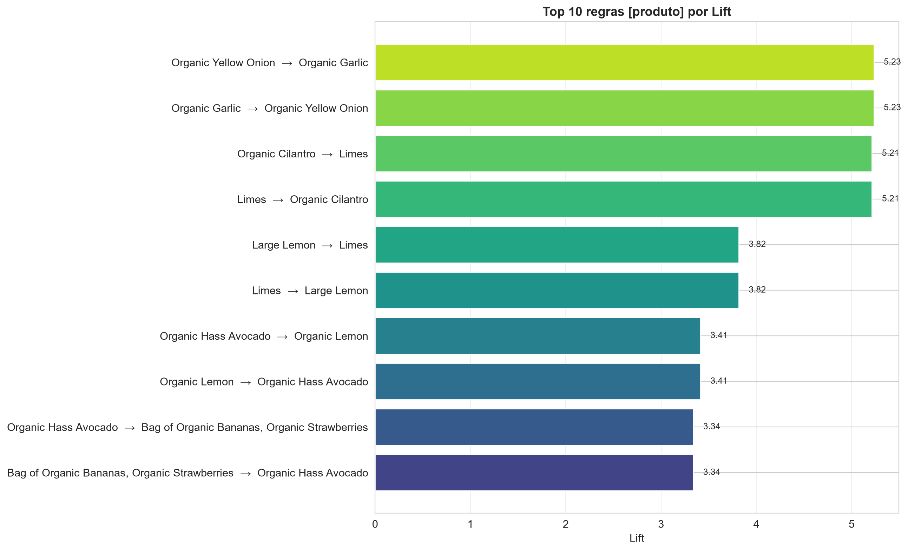
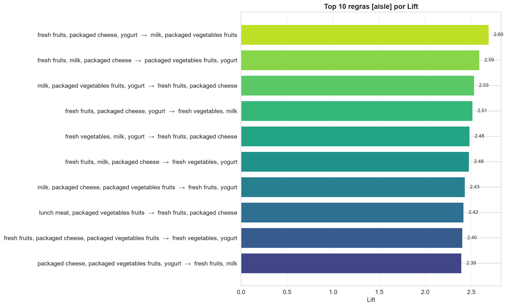
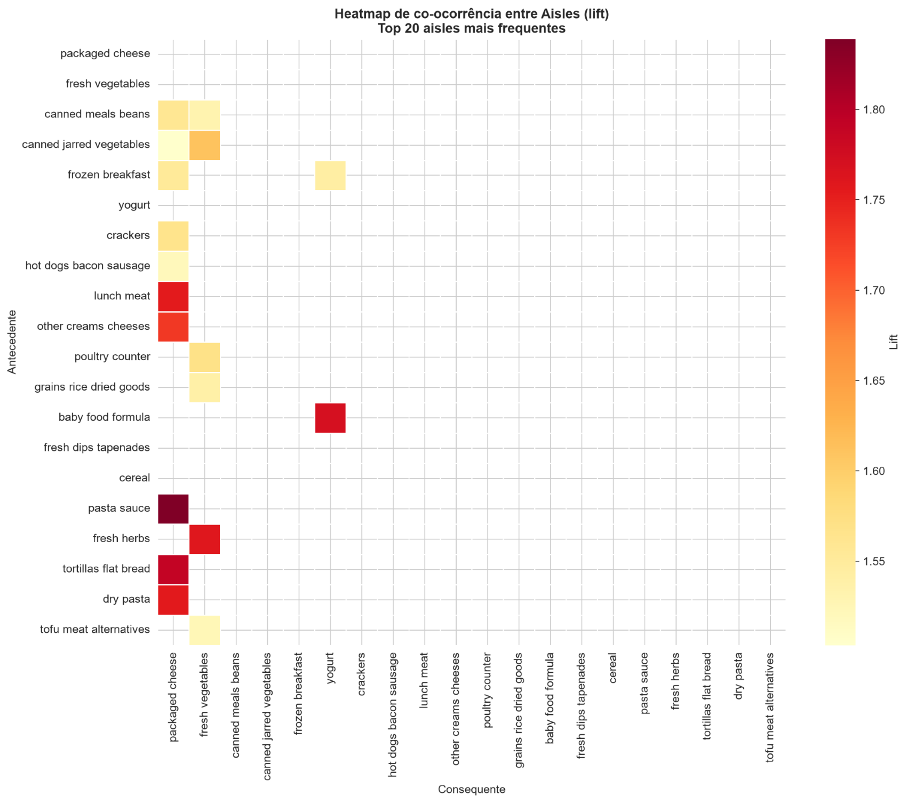
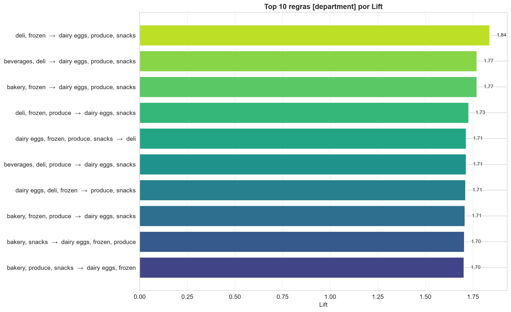
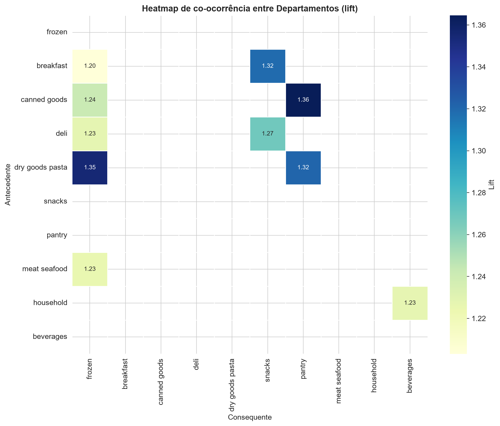
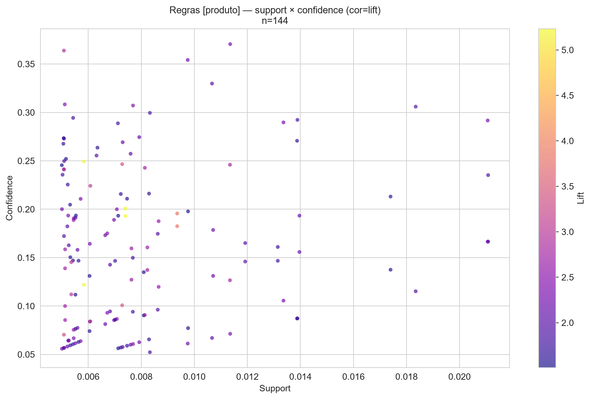
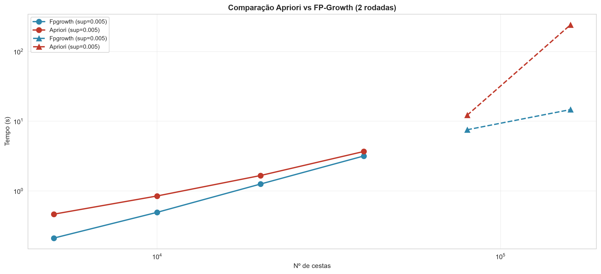
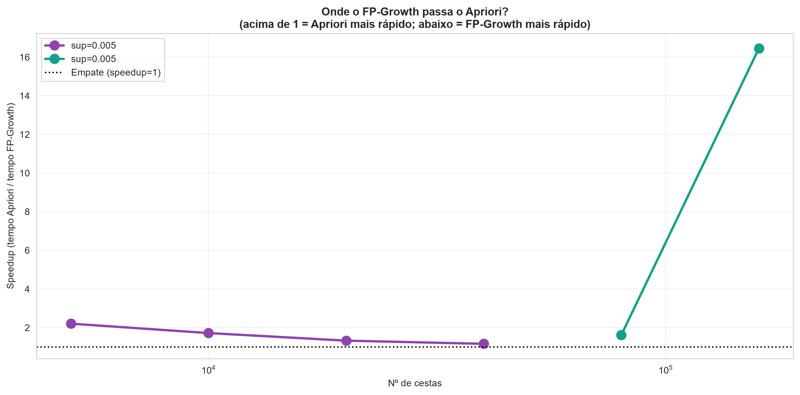

Disciplina: Mineração de Dados
Integrantes: Carlos Alberto Furlan e Gustavo Henrique Macedo Pena
Algoritmo: FP-Growth (Regras de Associação)
Dataset: Instacart Market Basket Analysis
Aplicar os conceitos de Mineração de Dados e KDD em uma base de dados real de grande porte, utilizando Regras de Associação para identificar padrões de compra conjunta relevantes para o negócio. O trabalho cobre desde a escolha e preparação da base até a interpretação dos resultados com insights acionáveis.
O Instacart Market Basket Analysis é um dataset público do Kaggle que contém o histórico de pedidos de milhares de usuários do serviço de entrega de supermercado Instacart. O problema de negócio abordado é:
Quais produtos, corredores e departamentos são comprados juntos com frequência suficiente para gerar recomendações e estratégias de venda cruzada?
Os resultados podem ser aplicados em: - Sistemas de recomendação ("quem levou X, também levou Y") - Layout físico de loja (posicionamento de corredores próximos) - Campanhas promocionais cruzadas - Gestão de sortimento
| Item | Valor |
|---|---|
| Nome | Instacart Market Basket Analysis |
| Fonte | Kaggle - https://www.kaggle.com/datasets/psparks/instacart-market-basket-analysis |
Registros em orders |
3.421.083 |
Registros em order_products__prior |
32.434.489 |
| Produtos distintos | 49.688 |
| Aisles (corredores) | 134 |
| Departments | 21 |
A base é composta por 6 arquivos CSV:
- orders.csv — pedidos (user_id, order_id, ordem, dia da semana, etc.)
- order_products__prior.csv — produtos em pedidos anteriores
- order_products__train.csv — produtos em pedidos de treino
- products.csv — catálogo de produtos
- aisles.csv — corredores
- departments.csv — departamentos
Cada pedido foi tratado como uma transação (cesta de compras), contendo a lista de produtos comprados. Foram construídas três granularidades de análise:
| Nível | Descrição | Nº de itens |
|---|---|---|
| Produto | Cada cesta = lista de produtos | 5.991 |
| Aisle | Cada cesta = lista de corredores únicos | 126 |
| Department | Cada cesta = lista de departamentos únicos | 21 |
As variáveis utilizadas foram:
- order_id — identificador do pedido
- product_id — identificador do produto
- product_name — nome do produto (para legibilidade)
- aisle_id / aisle — corredor do produto
- department_id / department — departamento do produto
- add_to_cart_order — ordem de adição ao carrinho
orders, todos na coluna days_since_prior_order — correspondem ao primeiro pedido de cada usuário (não há pedido anterior). Essa coluna não foi usada na análise.Devido ao tamanho da base (32,4 milhões de itens em 3,2 milhões de pedidos), foi adotada uma estratégia de amostragem + filtro de produtos raros:
Essa estratégia é justificada porque: 1. Uma matriz booleana de 3,2M × 49k seria inviável em 16 GB de RAM (~160 GB de células). 2. Padrões fortes já emergem com dezenas de milhares de transações. 3. Produtos muito raros gerariam regras com suporte instável e lift enganoso.
| Etapa | Resultado |
|---|---|
| Pedidos amostrados | 400,000 |
| Produtos válidos (freq ≥ 100) | 5.992 |
| Cestas finais (≥ 2 produtos) | 368.250 |
| Tamanho médio das cestas | 9,17 produtos |
| Total de itens preservados | 3.378.090 |
| Cobertura de itens | 84,36% |
Foi aplicado o TransactionEncoder do mlxtend para converter as listas de produtos em uma matriz booleana esparsa:
Foi escolhido o algoritmo FP-Growth (Frequent Pattern Growth) por meio da biblioteca mlxtend.
| Aspecto | Apriori | FP-Growth |
|---|---|---|
| Estratégia | Gera candidatos e testa | Constrói FP-tree, minera recursivamente |
| Passagens pelo dataset | k+1 (k = tamanho do maior itemset) | 2 |
| Uso de memória | Alto (candidatos) | Médio (árvore compacta) |
| Desempenho em bases grandes | Ruim | Excelente |
| Implementação | Simples | Complexa |
Conclusão: Dado o volume da base (~32 milhões de itens), o Apriori seria inviável (múltiplas passagens + explosão de candidatos). FP-Growth realiza apenas 2 passagens e usa uma estrutura compacta (FP-tree), sendo ordens de magnitude mais rápido.
min_supportForam testados múltiplos valores de min_support para cada granularidade:
| Granularidade | Valores testados | Escolhido | Justificativa |
|---|---|---|---|
| Produto | 0,02 / 0,01 / 0,005 / 0,003 / 0,002 / 0,001 | 0,001 | Único capaz de gerar volume relevante de itemsets len ≥ 2 |
| Aisle | 0,10 / 0,05 / 0,02 | 0,02 | Equilíbrio entre nº de itemsets e interpretabilidade |
| Department | 0,20 / 0,10 / 0,05 | 0,05 | Departamento é denso; suporte mais alto evita itemsets triviais |
| Granularidade | min_support | Itemsets totais | Itemsets len ≥ 2 |
|---|---|---|---|
| Produto | 0,001 | 4.413 | 2.495 |
| Aisle | 0,02 | 692 | 627 |
| Department | 0,05 | 242 | 228 |
As regras foram geradas com a função association_rules do mlxtend, aplicando filtros de min_confidence e min_lift.
Para cada granularidade, foram testadas combinações de min_confidence e min_lift (grid search). Foram escolhidos:
| Granularidade | min_support | min_confidence | min_lift | Nº regras |
|---|---|---|---|---|
| Produto | 0,001 | 0,02 | 1,0 | 5.067 |
| Aisle | 0,02 | 0,20 | 1,0 | 1.841 |
| Department | 0,05 | 0,30 | 1,0 | 940 |
Após filtros adicionais para tornar as regras confiáveis e interpretáveis:
| Granularidade | Filtros adicionais | Regras finais |
|---|---|---|
| Produto | support ≥ 0,005, lift ≥ 1,5, confidence ≥ 0,05 | 144 |
| Aisle | lift ≥ 1,5, confidence ≥ 0,30 | 558 |
| Department | lift ≥ 1,2, confidence ≥ 0,40 | 369 |
| Antecedente | Consequente | Suporte | Confiança | Lift |
|---|---|---|---|---|
| Organic Yellow Onion | Organic Garlic | 0.0074 | 0.1930 | 5.2330 |
| Organic Garlic | Organic Yellow Onion | 0.0074 | 0.2007 | 5.2330 |
| Limes | Organic Cilantro | 0.0058 | 0.1220 | 5.2136 |
| Organic Cilantro | Limes | 0.0058 | 0.2493 | 5.2136 |
| Large Lemon | Limes | 0.0094 | 0.1825 | 3.8158 |

Top 10 regras de produto por lift.
| Antecedente | Consequente | Suporte | Confiança | Lift |
|---|---|---|---|---|
| fresh fruits, packaged cheese, yogurt | milk, packaged vegetables fruits | 0.0205 | 0.3057 | 2.6898 |
| fresh fruits, milk, packaged cheese | packaged vegetables fruits, yogurt | 0.0205 | 0.3335 | 2.5888 |
| milk, packaged vegetables fruits, yogurt | fresh fruits, packaged cheese | 0.0205 | 0.3980 | 2.5304 |
| fresh fruits, packaged cheese, yogurt | fresh vegetables, milk | 0.0226 | 0.3369 | 2.5142 |
| fresh vegetables, milk, yogurt | fresh fruits, packaged cheese | 0.0226 | 0.3905 | 2.4825 |

Top 10 regras de aisle por lift.

Heatmap de co-ocorrência entre aisles (lift).
| Antecedente | Consequente | Suporte | Confiança | Lift |
|---|---|---|---|---|
| deli, frozen | dairy eggs, produce, snacks | 0.0512 | 0.4848 | 1.8377 |
| beverages, deli | dairy eggs, produce, snacks | 0.0524 | 0.4670 | 1.7700 |
| bakery, frozen | dairy eggs, produce, snacks | 0.0540 | 0.4669 | 1.7697 |
| deli, frozen, produce | dairy eggs, snacks | 0.0512 | 0.5367 | 1.7265 |
| dairy eggs, frozen, produce, snacks | deli | 0.0512 | 0.4118 | 1.7137 |

Top 10 regras de department por lift.

Heatmap de co-ocorrência entre departamentos (lift).

Regras de produto: support × confidence (cor = lift).
O FP-Growth foi escolhido por três razões principais:
min_support.| Critério | Apriori | FP-Growth |
|---|---|---|
| Paradigma | Generate-and-test | Divide-and-conquer |
| Passagens | k+1 (uma por tamanho de itemset) | 2 |
| Estrutura | Listas de candidatos | FP-tree |
| Custo computacional | Alto (muitos candidatos) | Baixo (compacto) |
| Uso de memória | Alto | Médio |
| Desempenho em bases densas | Ruim | Excelente |
| Implementação | Simples | Complexa |
| Ideal para | Bases pequenas | Bases grandes (nosso caso) |
FP-Growth e Apriori não se beneficiam de GPU. Ambos são algoritmos essencialmente: - Sequenciais (recursivos, baseados em estruturas de dados em memória CPU) - Baseados em contagem de itemsets e comparação de conjuntos
Portanto, todo o processamento foi feito em CPU + RAM (16 GB), conforme planejado. O uso de GPU (RTX 4050, 6 GB VRAM) não traria ganho para esta tarefa.
Para validar empiricamente a escolha do FP-Growth, ambos os algoritmos foram
executados sobre as mesmas amostras, com os mesmos parâmetros
(min_support = 0.005), medindo tempo de execução e consumo de memória.
| Cestas | Apriori (s) | FP-Growth (s) | Speedup (AP/FP) |
|---|---|---|---|
| 5,000 | 0.46 | 0.21 | 2.20 |
| 10,000 | 0.85 | 0.49 | 1.72 |
| 20,000 | 1.67 | 1.26 | 1.32 |
| 40,000 | 3.69 | 3.18 | 1.16 |
| 80,000 | 12.22 | 7.56 | 1.62 |
| 160,000 | 242.04 | 14.71 | 16.46 |
Em amostras pequenas (5k-40k cestas), o Apriori ainda é competitivo
(speedup de 1,16x a 2,20x). Isso ocorre porque, com min_support=0.005,
o número de itemsets frequentes é pequeno (~380-410 itemsets), e o
overhead de construção da FP-tree do FP-Growth domina em bases pequenas.
Em 80.000 cestas, o FP-Growth já é 1,62x mais rápido.
Em 160.000 cestas, o comportamento muda drasticamente:
O Apriori sofre explosão combinatória de candidatos — ele gera todos os pares, trios, quádruplos... e testa cada um contra o dataset. Em bases maiores, isso cresce exponencialmente. O FP-Growth, em contraste, mantém o custo próximo do linear.

Comparação de tempo entre Apriori e FP-Growth em 6 tamanhos de amostra (min_support = 0,005).

Speedup do FP-Growth em relação ao Apriori (tempo Apriori / tempo FP-Growth). Acima de 1 = FP-Growth mais rápido.
Conclusão empírica: os resultados confirmam a previsão teórica. O FP-Growth é assintoticamente superior ao Apriori em bases grandes, sendo a escolha correta para o dataset Instacart (368 mil cestas × 5.991 produtos).
P1/
├── database/
│ ├── aisles.csv [2.5 KB]
│ ├── departments.csv
│ ├── order_products__prior.csv [550.8 MB]
│ ├── order_products__train.csv [23.5 MB]
│ ├── orders.csv [103.9 MB]
│ └── products.csv [2.1 MB]
├── docs/
│ ├── Resultado.pdf [2.2 MB]
│ ├── Resultado_.pdf [2.3 MB]
│ └── Trabalho e apresentação para P1.pdf [100.1 KB]
├── results/
│ ├── cache/
│ │ [20 arquivos .parquet, 119.1 MB]
│ ├── figures/
│ │ [31 figuras, 3.1 MB]
│ │ └── _Apoio/
│ │ ├── slide_heatmap_aisle.png [383.2 KB]
│ │ └── slide_heatmap_aisle_.png [227.2 KB]
│ ├── logs/
│ │ [13 logs, 106.0 KB]
│ ├── report/
│ │ [1 relatórios, 21.6 KB]
│ │ └── relatorio_final.html [30.4 KB]
│ ├── slides/
│ │ └── apresentacao.pptx [256.1 KB]
│ └── tables/
│ [18 tabelas, 34.1 MB]
├── src/
│ ├── exploratory/
│ │ └── step05_fpgrowth.py [8.3 KB]
│ ├── __init__.py
│ ├── bkp_step08_report.py [23.4 KB]
│ ├── config.py [2.4 KB]
│ ├── step01_setup.py [2.2 KB]
│ ├── step02_load_eda.py [10.7 KB]
│ ├── step03_transactions.py [6.4 KB]
│ ├── step04_encode.py [4.6 KB]
│ ├── step05b_fpgrowth_produto.py [6.8 KB]
│ ├── step05c_build_aisle_department.py [6.0 KB]
│ ├── step05d_fpgrowth_macro.py [7.8 KB]
│ ├── step06_rules.py [10.6 KB]
│ ├── step07_insights.py [12.9 KB]
│ ├── step08_report.py [29.1 KB]
│ ├── step09_slides.py [23.3 KB]
│ ├── step10_apriori_vs_fpgrowth.py [12.4 KB]
│ └── utils.py [2.5 KB]
├── .gitignore
├── README.md [4.8 KB]
└── requirements.txt
Relatório gerado automaticamente por step08_report.py em 29/09/2026 às 14:46.